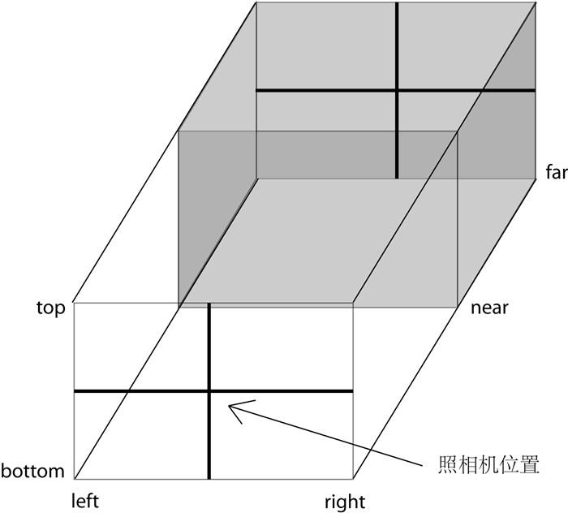

WebGL可以看做是将OpenGL ES（OpenGL for Embedded Systems，OpenGL嵌入式版本，针对手机、游戏机等设备相对较轻量级的版本）移植到了网页平台，像Chrome、Firefox这些现代浏览器都实现了WebGL标准，使用JavaScript就可以用你熟悉的、类似OpenGL的代码编写了。
WebGL是一个底层的标准，在这些标准被定义之后，Chrome、Firefox之类的浏览器实现了这些标准。然后，程序员就能通过JavaScript代码，在网页上实现三维图形的渲染了。
一个典型的Three.js程序至少要包括渲染器（Renderer）、场景（Scene）、照相机（Camera），以及你在场景中创建的物体。
WebGL的渲染是需要HTML5 Canvas元素的，你可以手动在HTML的<body>部分中定义Canvas元素，或者让Three.js帮你生成。
不过在此之前，应该在HTML的<head>部分，声明外部文件three.js
它定义了三维空间到二维屏幕的投影方式，分为正交投影照相机与透视投影照相机。
使用透视投影照相机获得的结果是类似人眼在真实世界中看到的有“近大远小”的效果（如下图中的(a)）；而使用正交投影照相机获得的结果就像我们在数学几何学课上老师教我们画的效果，对于在三维空间内平行的线，投影到二维空间中也一定是平行的（如下图中的(b)）。

正交投影照相机（Orthographic Camera）设置起来较为直观，它的构造函数是：
THREE.OrthographicCamera(left, right, top, bottom, near, far)

透视投影照相机（Perspective Camera）的构造函数是：
THREE.PerspectiveCamera(fov, aspect, near, far)
aspect等于width / height，是照相机水平方向和竖直方向长度的比值，通常设为Canvas的横纵比例。